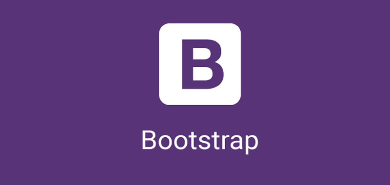

Bootstrap
Bootstrap es un framework CSS desarrollado por Twitter en 2010, para estandarizar las herramientas de la compañía. Inicialmente, se llamó Twitter Blueprint y, un poco más tarde, en 2011, se transformó en código abierto y su nombre cambió para Bootstrap. Desde entonces fue actualizado varias veces y ya se encuentra en la versión 4.4. El framework combina CSS y JavaScript para estilizar los elementos de una página HTML. Permite mucho más que, simplemente, cambiar el color de los botones y los enlaces. Esta es una herramienta que proporciona interactividad en la página, por lo que ofrece una serie de componentes que facilitan la comunicación con el usuario, como menús de navegación, controles de página, barras de progreso y más. Además de todas las características que ofrece el framework, su principal objetivo es permitir la construcción de sitios web responsive para dispositivos móviles. Esto significa que las páginas están diseñadas para funcionar en desktop, tablets y smartphones, de una manera muy simple y organizada.
La historia de Boostrap
Bootstrap es un framework de front-end de código abierto creado por Mark Otto y Jacob Thornton en Twitter en 2010. Originalmente concebido como un proyecto interno llamado "Twitter Blueprint", se lanzó como proyecto de código abierto en 2011. Bootstrap ofrece un conjunto de herramientas y componentes preestablecidos para facilitar el desarrollo web, lo que lo convirtió en una opción popular entre los desarrolladores. Su evolución constante y su comunidad activa han contribuido a su popularidad y su influencia en la forma en que se desarrollan los sitios web.